<meta charset="utf-8">
<title>FloraScan Demo Branch Report</title>
<meta name="claude:viewport-fit-sides" content="cover">
<link rel="preconnect" href="https://fonts.googleapis.com">
<link rel="stylesheet" href="https://fonts.googleapis.com/css2?family=Archivo:wght@500;600;700&family=Inter:wght@400;500;600&family=JetBrains+Mono:wght@400;500&display=swap">
<style>
/* Layout: one reading column with a sticky section bar; tables and figures may break out wider. */
:root {
  --bg: #f4f7f5; --surface: #ffffff; --ink: #16211b; --muted: #5a6b61; --line: #d9e2dc;
  --accent: #1d6b47; --accent-soft: #e2f0e8;
  --pass: #1b7a43; --pass-bg: #e3f3e9; --fail: #b02a20; --fail-bg: #fbe7e5;
  --warn: #9a5b00; --warn-bg: #fdf0dc; --info: #2a5a8a; --info-bg: #e5eef8;
  --code-bg: #eef3f0;
  --f-display: "Archivo", "Segoe UI", system-ui, sans-serif;
  --f-body: "Inter", "Segoe UI", system-ui, sans-serif;
  --f-mono: "JetBrains Mono", ui-monospace, "Cascadia Mono", Consolas, monospace;
}
@media (prefers-color-scheme: dark) { :root:not([data-theme="light"]) {
  --bg: #0e1411; --surface: #151d19; --ink: #e3ebe6; --muted: #98a99f; --line: #26332c;
  --accent: #5fc28f; --accent-soft: #1b2c23;
  --pass: #6fd39a; --pass-bg: #173322; --fail: #ff8f86; --fail-bg: #3a1a17;
  --warn: #f2b65c; --warn-bg: #36280f; --info: #8db9e8; --info-bg: #182838; --code-bg: #1c2621;
  color-scheme: dark; } }
:root[data-theme="dark"] {
  --bg: #0e1411; --surface: #151d19; --ink: #e3ebe6; --muted: #98a99f; --line: #26332c;
  --accent: #5fc28f; --accent-soft: #1b2c23;
  --pass: #6fd39a; --pass-bg: #173322; --fail: #ff8f86; --fail-bg: #3a1a17;
  --warn: #f2b65c; --warn-bg: #36280f; --info: #8db9e8; --info-bg: #182838; --code-bg: #1c2621;
  color-scheme: dark; }
* { box-sizing: border-box; }
body { background: var(--bg); color: var(--ink); font: 15px/1.6 var(--f-body); margin: 0; }
.wrap { max-width: 1080px; margin: 0 auto; padding-left: max(16px, env(safe-area-inset-left, 0px)); padding-right: max(16px, env(safe-area-inset-right, 0px)); }
header.top { border-bottom: 1px solid var(--line); background: var(--surface); }
header.top .wrap { padding-block: 28px 22px; display: grid; gap: 10px; }
.eyebrow { font: 500 12px/1 var(--f-mono); letter-spacing: .08em; text-transform: uppercase; color: var(--accent); }
h1 { font: 700 clamp(26px, 4vw, 36px)/1.15 var(--f-display); margin: 0; text-wrap: balance; letter-spacing: -.01em; }
h2 { font: 650 22px/1.25 var(--f-display); margin: 0; text-wrap: balance; }
h3 { font: 600 16px/1.3 var(--f-display); margin: 8px 0 0; }
.meta { display: flex; flex-wrap: wrap; gap: 6px 18px; color: var(--muted); font-size: 13px; }
.meta code { font-size: 12px; }
nav.bar { position: sticky; top: env(safe-area-inset-top, 0px); z-index: 5; background: color-mix(in srgb, var(--bg) 92%, transparent); backdrop-filter: blur(6px); border-bottom: 1px solid var(--line); }
body::before { content: ""; position: fixed; inset: 0 0 auto; height: env(safe-area-inset-top, 0px); z-index: 10; background: var(--bg); }
nav.bar .wrap { display: flex; gap: 6px; overflow-x: auto; padding-block: 8px; scrollbar-width: none; }
nav.bar a { flex: none; color: var(--muted); text-decoration: none; font-size: 13px; padding: 5px 10px; border-radius: 6px; }
nav.bar a:hover, nav.bar a:focus-visible { color: var(--ink); background: var(--accent-soft); outline: none; }
main .wrap { display: grid; gap: 44px; padding-block: 32px 64px; }
section { display: grid; gap: 14px; min-width: 0; scroll-margin-top: 56px; }
section > p, .prose { max-width: 70ch; margin: 0; }
.verdict { background: var(--accent-soft); border: 1px solid color-mix(in srgb, var(--accent) 30%, var(--line)); border-radius: 10px; padding: 16px 18px; display: grid; gap: 8px; }
.verdict b { font-family: var(--f-display); font-size: 17px; }
.verdict ul { margin: 0; padding-left: 20px; display: grid; gap: 4px; }
.tablewrap { overflow-x: auto; border: 1px solid var(--line); border-radius: 10px; background: var(--surface); }
table { border-collapse: collapse; width: 100%; font-size: 13.5px; }
th, td { text-align: left; padding: 9px 12px; border-bottom: 1px solid var(--line); vertical-align: top; }
th { font: 600 11.5px/1.3 var(--f-body); text-transform: uppercase; letter-spacing: .05em; color: var(--muted); background: color-mix(in srgb, var(--surface) 70%, var(--bg)); white-space: nowrap; }
tr:last-child td { border-bottom: 0; }
td { font-variant-numeric: tabular-nums; }
td:first-child { min-width: 150px; }
table.summary td:nth-child(2) { font-family: var(--f-mono); white-space: nowrap; }
.muted { color: var(--muted); font-size: 12px; }
.pill { display: inline-block; font: 600 11.5px/1 var(--f-body); padding: 4px 8px; border-radius: 999px; white-space: nowrap; }
.pill.pass { color: var(--pass); background: var(--pass-bg); }
.pill.fail { color: var(--fail); background: var(--fail-bg); }
.pill.warn { color: var(--warn); background: var(--warn-bg); }
.pill.info { color: var(--info); background: var(--info-bg); }
code { font: 12.5px var(--f-mono); background: var(--code-bg); padding: 1px 5px; border-radius: 4px; }
pre { font: 12.5px/1.55 var(--f-mono); background: var(--code-bg); padding: 12px 14px; border-radius: 8px; overflow-x: auto; margin: 0; }
.figs { display: grid; grid-template-columns: repeat(auto-fill, minmax(min(100%, 320px), 1fr)); gap: 14px; }
figure { margin: 0; background: #fff; border: 1px solid var(--line); border-radius: 10px; overflow: hidden; display: grid; }
figure.wide { grid-column: 1 / -1; }
figure img { display: block; width: 100%; height: auto; max-width: 100%; }
figcaption { background: var(--surface); color: var(--muted); font-size: 12.5px; padding: 8px 12px; border-top: 1px solid var(--line); }
.two { display: grid; grid-template-columns: repeat(auto-fit, minmax(min(100%, 420px), 1fr)); gap: 16px; align-items: start; }
.two > * { min-width: 0; }
.flow { display: flex; flex-wrap: wrap; align-items: center; gap: 6px; font-size: 13px; }
.flow span.node { background: var(--surface); border: 1px solid var(--line); border-radius: 8px; padding: 6px 10px; }
.flow span.arrow { color: var(--muted); }
.callout { border-left: 3px solid var(--line); padding: 2px 0 2px 12px; color: var(--muted); max-width: 70ch; }
a { color: var(--accent); }
a:focus-visible { outline: 2px solid var(--accent); outline-offset: 2px; }
@media (prefers-reduced-motion: no-preference) { html { scroll-behavior: smooth; } }
</style>

<header class="top"><div class="wrap">
  <div class="eyebrow">COS30049 · FloraScan · final test</div>
  <h1>FloraScan demo branch report</h1>
  <div class="meta">
    <span>Tested 14 Nov 2026</span>
    <span>Branch <code>demo</code> = <code>main</code> (#14, #15) + <code>4ec1f622</code> IoT sequence protection</span>
    <span>Windows 11 · Node 24.15 · MariaDB (XAMPP) · Python 3.12 · RTX 4060</span>
  </div>
</div></header>

<nav class="bar" aria-label="Sections"><div class="wrap">
  <a href="#summary">Summary</a><a href="#branch">What is on demo</a><a href="#web">Web app</a><a href="#iot">IoT over MQTT</a>
  <a href="#accuracy">AI accuracy</a><a href="#qualitative">AI qualitative</a><a href="#variance">AI model variance</a>
  <a href="#findings">Findings</a><a href="#rerun">Run it again</a>
</div></nav>

<main><div class="wrap">

<section id="summary">
  <h2>Summary</h2>
  <div class="verdict">
    <b>Ready to merge into main once the fixes below are committed.</b>
    <ul>
      <li>Every web suite passes on <code>demo</code> after three fixes: the IoT permission check lost in #15, a test-only rate-limit switch, and the password-reset notice.</li>
      <li>The IoT pipeline works end to end over MQTT: a simulated ESP32 on the EMQX cloud broker, the same on a local broker with no internet, and the firmware compiles for the real board.</li>
      <li>The AI models give the same answers on all three backends. Accuracy holds on unseen data, but drops on noisy or greyscale pictures, and close-up clips need a drawn plant zone.</li>
    </ul>
  </div>
  <div class="tablewrap"><table class="summary"><thead><tr><th>Part</th><th>Result</th><th>Status</th></tr></thead><tbody><tr><td>Web app: security headers and rate limits</td><td>12 / 12</td><td><span class="pill pass">Pass</span></td></tr><tr><td>Web app: translations (EN, BM, 中文)</td><td>4 / 4</td><td><span class="pill pass">Pass</span></td></tr><tr><td>Web app: API</td><td>466 / 466</td><td><span class="pill pass">Pass</span></td></tr><tr><td>Web app: browser UI, every role</td><td>333 / 333</td><td><span class="pill pass">Pass</span></td></tr><tr><td>Web app: passkeys</td><td>20 / 20</td><td><span class="pill warn">Pass in 4 of 5 runs</span></td></tr><tr><td>IoT: MQTT end to end on the EMQX cloud broker</td><td>90 / 90</td><td><span class="pill pass">Pass</span></td></tr><tr><td>IoT: the same on a local broker (no internet)</td><td>85 / 85</td><td><span class="pill pass">Pass</span></td></tr><tr><td>IoT: ESP32 firmware compiles</td><td>78% flash</td><td><span class="pill pass">Pass</span></td></tr><tr><td>AI: pipeline rules (scripted scenes)</td><td>8 / 8</td><td><span class="pill pass">Pass</span></td></tr><tr><td>AI: touch classifier accuracy (3,034 unseen crops)</td><td>78.8%</td><td><span class="pill info">Measured</span></td></tr><tr><td>AI: detector mAP50 on unseen COCO val2017</td><td>0.699</td><td><span class="pill info">Measured</span></td></tr><tr><td>AI: test clips with a plant zone drawn</td><td>8 / 8</td><td><span class="pill pass">Pass</span></td></tr><tr><td>AI: test clips on app defaults (no zone)</td><td>4 / 8</td><td><span class="pill warn">Partial</span></td></tr></tbody></table></div>
</section>

<section id="branch">
  <h2>What is on demo</h2>
  <p>The newest work from every branch, checked against <code>main</code>. The older branches (<code>IOT</code>, <code>feature/iot-monitoring</code>, <code>ai-vision</code>, <code>MyAccount+2FA+ChangePassword</code>) are already in main through #12, #14 and #15; merging them again would delete newer files.</p>
  <div class="tablewrap"><table class=""><thead><tr><th>Commit</th><th>By</th><th>What</th></tr></thead><tbody><tr><td><code>4ec1f622</code></td><td>darren</td><td>IoT reading sequence protection: boot id + sequence on every reading, duplicates refused (13 Nov)</td></tr><tr><td><code>0522387c</code></td><td>NyChieng</td><td>#14 Account security: recovery, two-step verification, passkeys</td></tr><tr><td><code>90c1af3e</code></td><td>NyChieng</td><td>#15 Live IoT sensor monitoring over MQTT</td></tr><tr><td><code>65681b0e</code></td><td>jiaqihu15</td><td>#13 API rate limits, security headers</td></tr></tbody></table></div>
  <p>Changes made during this test, not yet committed:</p>
  <div class="tablewrap"><table class=""><thead><tr><th>File</th><th>Change</th></tr></thead><tbody><tr><td><code>Server/api.js</code>, <code>IoT.jsx</code>, <code>Shell.jsx</code></td><td>IoT permission checks restored from <code>90063624</code>; “Soon” label removed from IoT monitoring</td></tr><tr><td><code>Server/api.js</code></td><td>Password-reset notice limited from the database, not memory</td></tr><tr><td><code>Server/security.js</code>, <code>Server/index.js</code>, <code>package.json</code></td><td><code>npm run dev:test</code> (test-only limits) and <code>npm run test:iot</code></td></tr><tr><td><code>tests/api.test.mjs</code></td><td>Photo test fetches as its uploader (NY's fix from 4 Nov); IoT permission checks</td></tr><tr><td><code>tests/iot-mqtt.test.mjs</code></td><td>New: MQTT end-to-end test</td></tr><tr><td><code>ai-vision-node/scripts/eval_*.py</code></td><td>New: touch, detector, video and pose evaluations</td></tr><tr><td><code>docs/demo-branch.md</code>, <code>test-report/</code></td><td>How to use demo; this report</td></tr></tbody></table></div>
</section>

<section id="web">
  <h2>Web app</h2>
  <p>Each suite ran against a fresh local database (<code>scripts/test-db.mjs</code> reseeds it) and the server on HTTPS. “As merged” is the branch exactly as committed. The UI suite drives headless Chrome through every screen and every role and fails on any console error.</p>
  <div class="tablewrap"><table class=""><thead><tr><th>Suite</th><th>As merged (real rate limits)</th><th>Final (npm run dev:test)</th></tr></thead><tbody><tr><td>Security headers, rate limits, framing</td><td>12 / 12</td><td>12 / 12</td></tr><tr><td>Translations</td><td>4 / 4</td><td>4 / 4</td></tr><tr><td>API (Server/api.js)</td><td>85 passed, 11 failed, then stopped</td><td>466 / 466</td></tr><tr><td>Browser UI (headless Chrome)</td><td>30 passed, 3 failed, then stopped</td><td>333 / 333</td></tr><tr><td>Passkeys (virtual authenticator)</td><td>2 passed, 0 failed, then stopped</td><td>20 / 20 in 4 of 5 runs; 19 / 20 in the other</td></tr></tbody></table></div>
  <p class="callout">The final API run has 40 sections and 466 checks; as merged it stopped in section 9. The passkey suite failed one check once in 5 runs and passed the other 4 (finding 8).</p>
</section>

<section id="iot">
  <h2>IoT over MQTT</h2>
  <div class="flow" aria-label="Data path">
    <span class="node">ESP32 node (simulated)</span><span class="arrow">→ MQTT over TLS :8883 →</span>
    <span class="node">EMQX broker, Singapore</span><span class="arrow">→</span>
    <span class="node"><code>Server/mqtt.js</code> checks key, ranges, sequence</span><span class="arrow">→</span>
    <span class="node">MySQL <code>sensor_readings</code>, <code>sensor_alerts</code></span><span class="arrow">→</span>
    <span class="node"><code>/api/sensors</code> → IoT dashboard</span>
  </div>
  <p><code>tests/iot-mqtt.test.mjs</code> plays the ESP32: same broker, same device login, and the exact JSON the sketch builds. It ran on its own topic prefix (<code>florascan-demo-test</code>), so teammates' servers never received its readings.</p>
  <div class="tablewrap"><table class=""><thead><tr><th>Test section</th><th>Checks</th><th>Result</th></tr></thead><tbody><tr><td>1. The node connects to the broker like the ESP32</td><td>2 / 2</td><td><span class="pill pass">Pass</span></td></tr><tr><td>2. A reading in the sketch&#x27;s format is saved</td><td>15 / 15</td><td><span class="pill pass">Pass</span></td></tr><tr><td>3. Sequence protection: retries, restarts and replays (newest commit)</td><td>7 / 7</td><td><span class="pill pass">Pass</span></td></tr><tr><td>4. Messages the server must refuse</td><td>34 / 34</td><td><span class="pill pass">Pass</span></td></tr><tr><td>5. Alerts when a reading leaves the botanist&#x27;s limits</td><td>18 / 18</td><td><span class="pill pass">Pass</span></td></tr><tr><td>6. Who may see sensors and resolve alerts<div class="muted">4 failed before the permission fix</div></td><td>7 / 7</td><td><span class="pill pass">Pass</span></td></tr><tr><td>7. Speed and load</td><td>3 / 3</td><td><span class="pill pass">Pass</span></td></tr><tr><td>8. The IoT dashboard shows it</td><td>4 / 4</td><td><span class="pill pass">Pass</span></td></tr></tbody></table></div>
  <div class="two">
    <div style="display:grid;gap:10px">
      <h3>Timings</h3>
      <div class="tablewrap"><table class=""><thead><tr><th>Step</th><th>EMQX cloud</th><th>Local broker</th></tr></thead><tbody><tr><td>Node connects to the broker</td><td>97 ms</td><td>8 ms</td></tr><tr><td>Publish → saved in MySQL (median of 10)</td><td>32 ms</td><td>16 ms</td></tr><tr><td>Publish → saved (worst of 10)</td><td>47 ms</td><td>21 ms</td></tr><tr><td>Dry-soil reading → alert open</td><td>47 ms</td><td>15 ms</td></tr><tr><td>50 readings at once, all saved</td><td>4961 ms</td><td>214 ms</td></tr></tbody></table></div>
      <p class="muted">Local broker: Aedes on this laptop, a stand-in for a demo room without internet. The web server only needed <code>MQTT_URL=mqtt://127.0.0.1:1883</code>.</p>
      <h3>Firmware</h3>
      <p class="prose"><code>iot-kit/FloraScan_Node.ino</code> compiles with arduino-cli for DOIT ESP32 DEVKIT V1 (esp32 core 3.3.12, PubSubClient 2.8), with no warnings: 1025358 bytes (78%) of flash, 14% of RAM. Not run on the board: the kit was not connected.</p>
      <h3>If the broker is unreachable</h3>
      <p class="prose">With <code>MQTT_URL</code> pointing at a closed port, the server started, served the app and the sign-in page (HTTP 200), and kept retrying every 5 s.</p>
    </div>
    <figure class=""><a href="iot/iot-dashboard.png">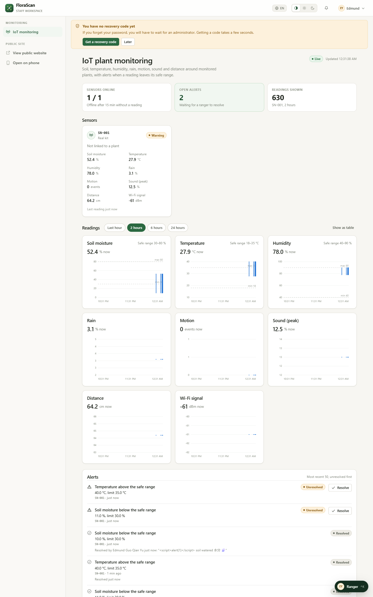</a><figcaption>The ranger's IoT dashboard after the test: live readings, two open alerts, and a resolved one whose note (with a script tag and emoji) is shown as text.</figcaption></figure>
  </div>
</section>

<section id="accuracy">
  <h2>AI accuracy</h2>
  <h3>Touch classifier: is this hand touching the plant?</h3>
  <p>The held-out test split of <code>data/touch</code>: 3,034 hand crops (1,466 touching), none used in training. Threshold 0.6, as in the app. Ranges are 95% bootstrap intervals over 1,000 resamples.</p>
  <div class="two">
    <div class="tablewrap"><table class=""><thead><tr><th>Metric</th><th>Value</th><th>95% interval</th></tr></thead><tbody><tr><td>Accuracy</td><td>0.788</td><td>0.774 – 0.803</td></tr><tr><td>Precision: a flagged touch is real</td><td>0.828</td><td>0.807 – 0.850</td></tr><tr><td>Recall: touches caught</td><td>0.708</td><td>0.686 – 0.732</td></tr><tr><td>F1</td><td>0.764</td><td>0.746 – 0.781</td></tr><tr><td>No-touch crops left alone</td><td>0.863</td><td>0.845 – 0.881</td></tr><tr><td>ROC-AUC</td><td>0.868</td><td>0.856 – 0.880</td></tr><tr><td>PR-AUC</td><td>0.866</td><td>0.851 – 0.882</td></tr></tbody></table></div>
    <div class="tablewrap"><table class=""><thead><tr><th>Source</th><th>Crops</th><th>Touch</th><th>Accuracy</th><th>Precision</th><th>Recall</th></tr></thead><tbody><tr><td>100doh</td><td>2,848</td><td>1,459</td><td>0.777</td><td>0.829</td><td>0.711</td></tr><tr><td>coco</td><td>153</td><td>0</td><td>0.993</td><td>–</td><td>–</td></tr><tr><td>hico</td><td>19</td><td>5</td><td>0.789</td><td>1.000</td><td>0.200</td></tr><tr><td>vg</td><td>14</td><td>2</td><td>0.857</td><td>0.000</td><td>0.000</td></tr><tr><td>hard negatives (hand near a plant, not touching)</td><td>96</td><td>0</td><td>0.990</td><td>–</td><td>–</td></tr></tbody></table></div>
  </div>
  <div class="figs"><figure class="wide"><a href="ai/touch/touch_curves.png">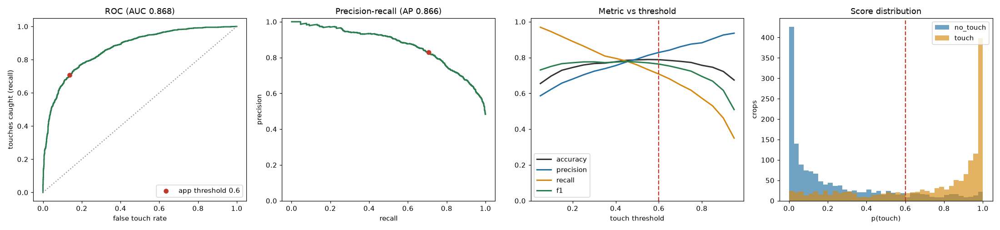</a><figcaption>ROC and precision-recall curves, every metric against the threshold, and the score distribution. Best F1 is at threshold 0.45 (F1 0.778); 0.6 trades some recall for fewer false alarms.</figcaption></figure></div>

  <h3>Detector: people, animals and plants on images it has never seen</h3>
  <p>The detector trained on COCO <em>train2017</em>, so COCO <em>val2017</em> is new to it. 1,417 images: 167 with potted plants, 500 with animals, 600 with people only, and 150 with none of the three (2,506 person, 1,132 animal and 320 plant boxes). Scored with pycocotools.</p>
  <p>The deployed detector scores mAP50 <b>0.699</b> here, against 0.788 on its own test split. Plants drop the most (AP50 0.502 against 0.716), because COCO's potted plants are small indoor objects while the training set leans on forest scenes.</p>

  <h3>The whole pipeline on recorded clips</h3>
  <p>Every frame through <code>app/pipeline.py</code> with the real models, timed by the video clock so the 1-second WARNING and 4-frame ALERT rules behave as on a live camera. Six clips recorded by the team, plus the two in <code>data/test_videos</code>.</p>
  <div class="tablewrap"><table class=""><thead><tr><th>Clip</th><th>Expected</th><th>Defaults, OpenVINO CPU</th><th>Plant zone, OpenVINO CPU</th><th>Plant zone, CUDA GPU</th></tr></thead><tbody><tr><td>ivy_touch</td><td>Alert</td><td><span class="pill fail">WARNING only</span><div class="muted">peak touch 0.93 · 28.0 fps</div></td><td><span class="pill pass">ALERT at 2.2 s</span><div class="muted">peak touch 0.97 · 12.4 fps</div></td><td><span class="pill pass">ALERT at 2.2 s</span><div class="muted">peak touch 0.94 · 36.8 fps</div></td></tr><tr><td>look plants 2</td><td>Alert</td><td><span class="pill pass">ALERT at 3.1 s</span><div class="muted">peak touch 0.95 · 14.0 fps</div></td><td><span class="pill pass">ALERT at 0.3 s</span><div class="muted">peak touch 0.96 · 13.1 fps</div></td><td><span class="pill pass">ALERT at 0.3 s</span><div class="muted">peak touch 0.95 · 31.4 fps</div></td></tr><tr><td>look plants</td><td>No alert</td><td><span class="pill pass">WARNING only</span><div class="muted">peak touch 0.00 · 25.4 fps</div></td><td><span class="pill pass">WARNING only</span><div class="muted">peak touch 0.00 · 12.5 fps</div></td><td><span class="pill pass">WARNING only</span><div class="muted">peak touch 0.00 · 23.8 fps</div></td></tr><tr><td>touch plants 2</td><td>Alert</td><td><span class="pill fail">SAFE throughout</span><div class="muted">peak touch 0.00 · 25.0 fps</div></td><td><span class="pill pass">ALERT at 0.2 s</span><div class="muted">peak touch 0.95 · 9.3 fps</div></td><td><span class="pill pass">ALERT at 0.2 s</span><div class="muted">peak touch 0.95 · 14.0 fps</div></td></tr><tr><td>touch plants 3</td><td>Alert</td><td><span class="pill fail">SAFE throughout</span><div class="muted">peak touch 0.00 · 25.8 fps</div></td><td><span class="pill pass">ALERT at 0.2 s</span><div class="muted">peak touch 0.92 · 8.7 fps</div></td><td><span class="pill pass">ALERT at 0.2 s</span><div class="muted">peak touch 0.94 · 15.0 fps</div></td></tr><tr><td>touch plants 4</td><td>Alert</td><td><span class="pill fail">SAFE throughout</span><div class="muted">peak touch 0.00 · 28.6 fps</div></td><td><span class="pill pass">ALERT at 0.1 s</span><div class="muted">peak touch 1.00 · 8.5 fps</div></td><td><span class="pill pass">ALERT at 0.1 s</span><div class="muted">peak touch 1.00 · 14.5 fps</div></td></tr><tr><td>touch plants</td><td>Alert</td><td><span class="pill pass">ALERT at 0.1 s</span><div class="muted">peak touch 0.99 · 11.1 fps</div></td><td><span class="pill pass">ALERT at 0.1 s</span><div class="muted">peak touch 0.99 · 11.3 fps</div></td><td><span class="pill pass">ALERT at 0.1 s</span><div class="muted">peak touch 0.99 · 32.1 fps</div></td></tr><tr><td>video2_4k</td><td>Alert</td><td><span class="pill pass">ALERT at 0.2 s</span><div class="muted">peak touch 0.98 · 8.2 fps</div></td><td><span class="pill pass">ALERT at 0.2 s</span><div class="muted">peak touch 0.98 · 8.2 fps</div></td><td><span class="pill pass">ALERT at 0.2 s</span><div class="muted">peak touch 0.98 · 11.1 fps</div></td></tr><tr><td><b>Clips correct</b></td><td></td><td><b>4 / 8</b></td><td><b>8 / 8</b></td><td><b>8 / 8</b></td></tr></tbody></table></div>
</section>

<section id="qualitative">
  <h2>AI qualitative analysis</h2>
  <div class="two">
    <div class="prose" style="display:grid;gap:8px">
      <h3>What the touch model gets wrong</h3>
      <p>Its “false touches” are nearly all from 100 Days of Hands with the label <em>no contact</em>, yet most show a hand gripping a cube, a bag or a phone. Many look like real contact, so the measured precision is if anything too low.</p>
      <p>Its “missed touches” are mostly hands on a face, on clothes or on another body. For guarding a plant, missing those is harmless.</p>
      <p>The weak spot is plants themselves. Only 33 test crops show a hand at a plant, and on HICO it caught 1 of 5 touches. On 96 crops of a hand near a plant without touching it, it was right 99.0% of the time, so it rarely cries wolf. The app's leaf-movement rule exists to cover this gap.</p>
    </div>
    <div class="figs"><figure class=""><a href="ai/touch/gallery_false_touch.jpg">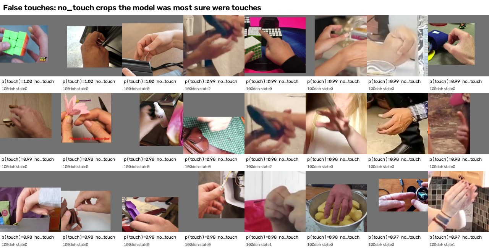</a><figcaption>False touches: no-contact crops the model was most sure about.</figcaption></figure><figure class=""><a href="ai/touch/gallery_missed_touch.jpg">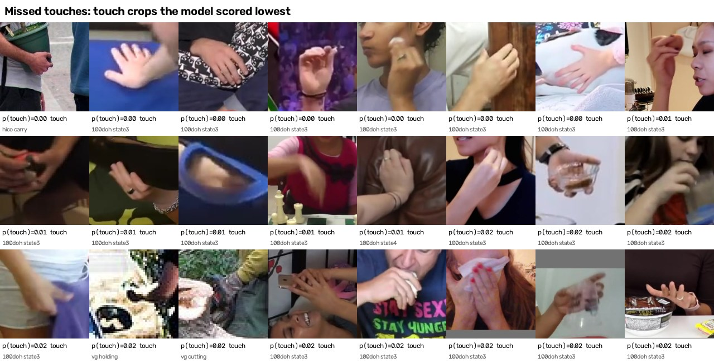</a><figcaption>Missed touches: touch crops it scored lowest.</figcaption></figure></div>
  </div>
  <div class="two">
    <div class="prose" style="display:grid;gap:8px">
      <h3>What the detector gets wrong</h3>
      <p>Its hardest images are crowds of small, distant objects: kite surfers on a beach, boats in a harbour, a flock of sheep. Small-object AP is 0.240 against 0.649 for large ones, which matters for a camera watching a plant from a few metres away.</p>
      <p>Many boxes counted as false are real vegetation, such as a riverside tree. COCO labels only potted plants, so the numbers undercount what our plant class is for. True mistakes do occur, such as a framed painting of flowers.</p>
      <p>Side by side with the stock model on plant photos, ours finds more of the plants in a room; the stock model draws tighter boxes on the ones it finds.</p>
    </div>
    <div class="figs"><figure class=""><a href="ai/det/det_ours_vs_stock_plants.jpg">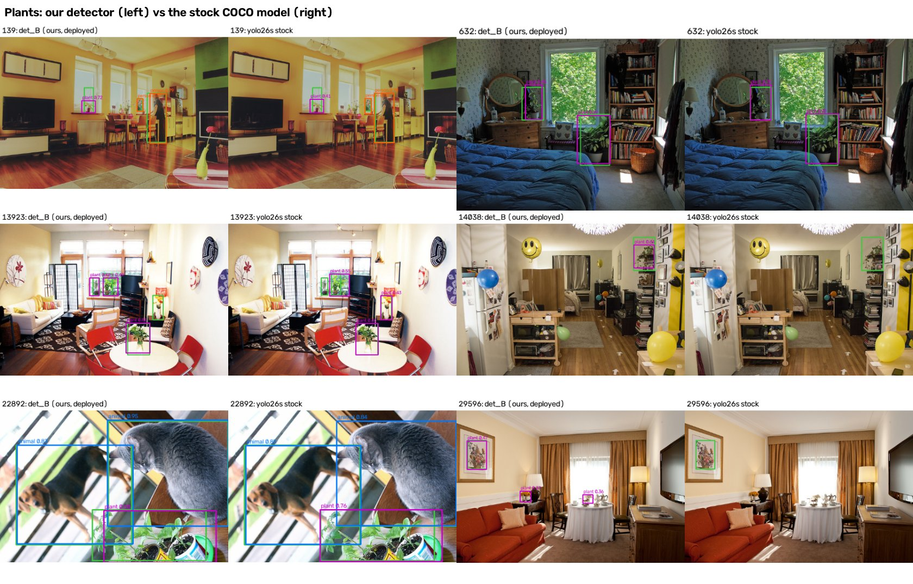</a><figcaption>Plants: our deployed detector (left of each pair) against stock YOLO26s (right). Green = labelled truth.</figcaption></figure><figure class=""><a href="ai/det/det_worst.jpg">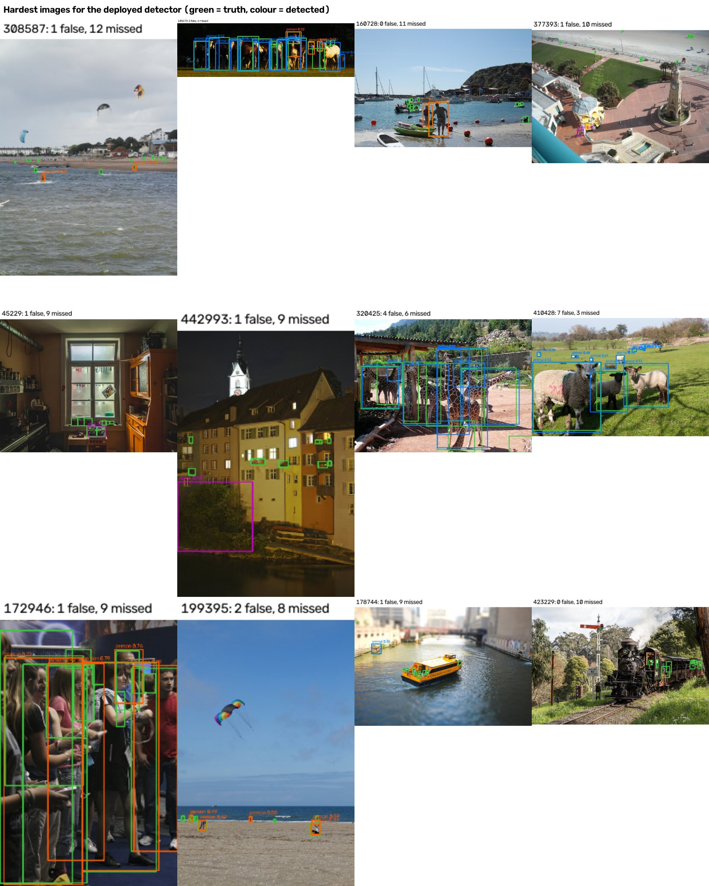</a><figcaption>The deployed detector's hardest images (most misses and false boxes).</figcaption></figure></div>
  </div>
  <h3>The clips, frame by frame</h3>
  <p class="prose">Eight evenly spaced frames from each annotated clip (plant zone drawn). The full annotated videos, keyframes at every stage change and per-frame CSVs are in <code>test-report/ai/videos/</code>.</p>
  <div class="figs"><figure class=""><a href="ai/videos/B_zone_openvino/look_plants_2/contact_sheet.jpg">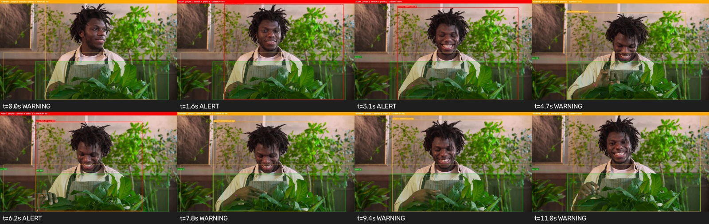</a><figcaption>look plants 2.mp4: expected an alert, got ALERT (plant zone, OpenVINO)</figcaption></figure><figure class=""><a href="ai/videos/B_zone_openvino/look_plants/contact_sheet.jpg">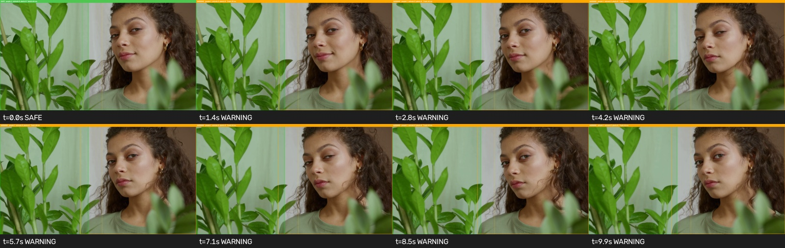</a><figcaption>look plants.mp4: expected no alert, got no alert (plant zone, OpenVINO)</figcaption></figure><figure class=""><a href="ai/videos/B_zone_openvino/touch_plants_2/contact_sheet.jpg">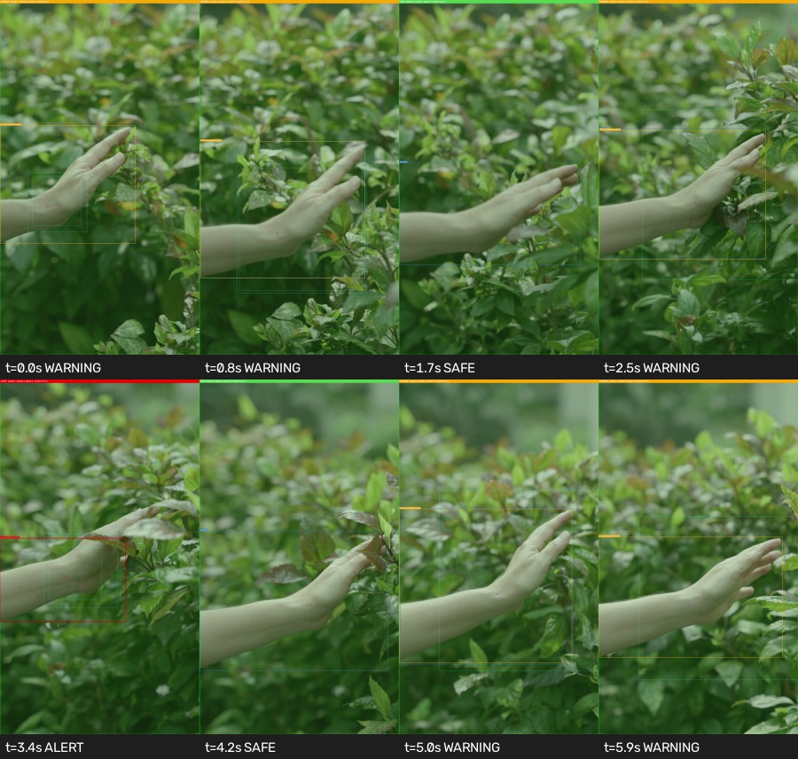</a><figcaption>touch plants 2.mp4: expected an alert, got ALERT (plant zone, OpenVINO)</figcaption></figure><figure class=""><a href="ai/videos/B_zone_openvino/touch_plants_3/contact_sheet.jpg">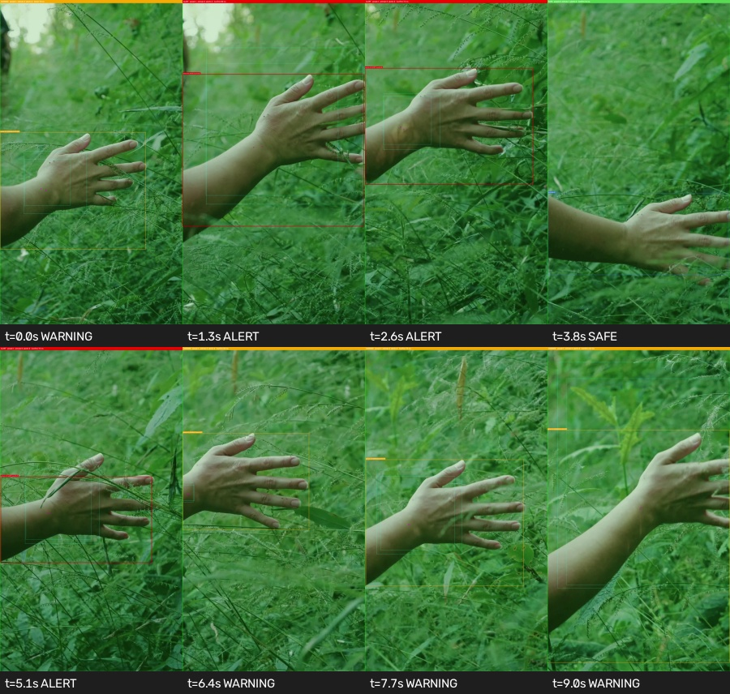</a><figcaption>touch plants 3.mp4: expected an alert, got ALERT (plant zone, OpenVINO)</figcaption></figure><figure class=""><a href="ai/videos/B_zone_openvino/touch_plants_4/contact_sheet.jpg">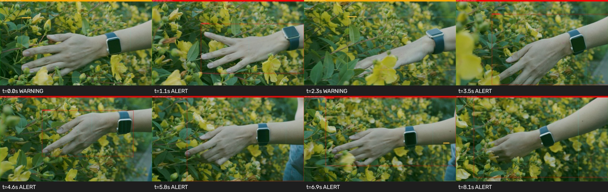</a><figcaption>touch plants 4.mp4: expected an alert, got ALERT (plant zone, OpenVINO)</figcaption></figure><figure class=""><a href="ai/videos/B_zone_openvino/touch_plants/contact_sheet.jpg">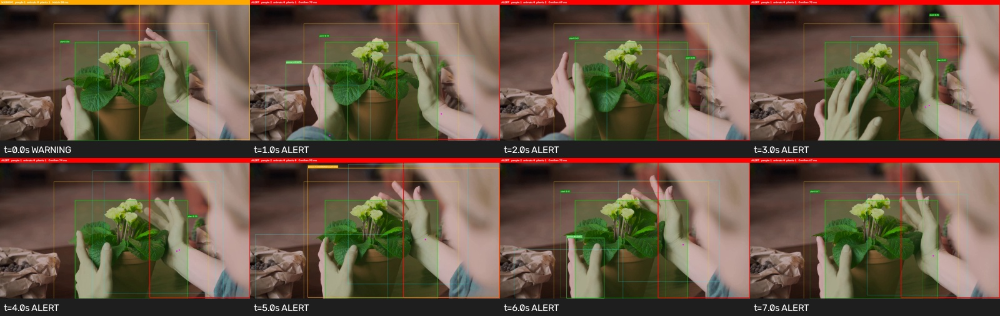</a><figcaption>touch plants.mp4: expected an alert, got ALERT (plant zone, OpenVINO)</figcaption></figure><figure class=""><a href="ai/videos/B_zone_openvino/ivy_touch/contact_sheet.jpg">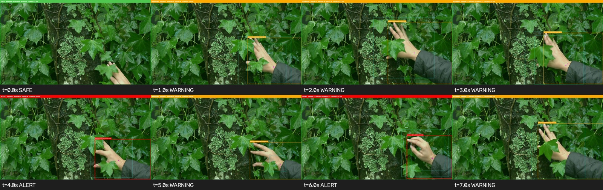</a><figcaption>ivy_touch.mp4: expected an alert, got ALERT (plant zone, OpenVINO)</figcaption></figure><figure class=""><a href="ai/videos/B_zone_openvino/video2_4k/contact_sheet.jpg">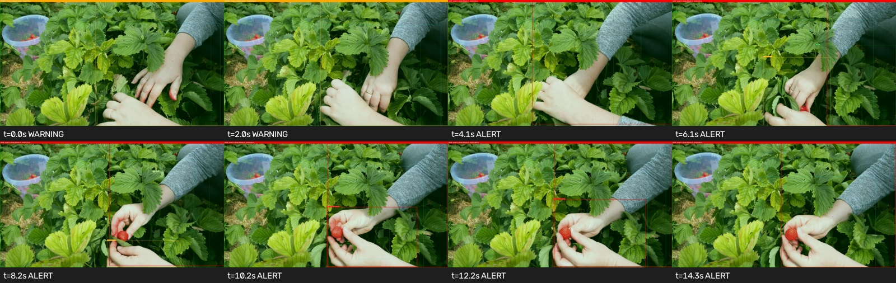</a><figcaption>video2_4k.mp4: expected an alert, got ALERT (plant zone, OpenVINO)</figcaption></figure></div>
</section>

<section id="variance">
  <h2>AI model variance</h2>
  <h3>Detector variants on the same 1,417 images</h3>
  <p>Our detector at three input sizes and as deployed, against the stock Ultralytics COCO models with their 80 classes mapped to our 3. “Folds” is mAP50 over 5 random fifths of the images: the spread to expect from the choice of test images alone.</p>
  <div class="tablewrap"><table class=""><thead><tr><th>Model</th><th>mAP50</th><th>Folds (mean ± sd)</th><th>mAP50-95</th><th>Person</th><th>Animal</th><th>Plant</th><th>Small objects</th><th>Plant P / R at app threshold</th><th>Empty images with a box</th><th>Speed</th></tr></thead><tbody><tr><td>det_B (ours) .pt 640</td><td>0.715</td><td>0.717 ± 0.026</td><td>0.501</td><td>0.802</td><td>0.825</td><td>0.518</td><td>0.267</td><td>0.57 / 0.55</td><td>32 / 150</td><td>10.7 ms<div class='muted'>GPU</div></td></tr><tr><td>det_B (ours) .pt 480</td><td>0.698</td><td>0.700 ± 0.024</td><td>0.481</td><td>0.778</td><td>0.812</td><td>0.503</td><td>0.242</td><td>0.60 / 0.53</td><td>26 / 150</td><td>11.2 ms<div class='muted'>GPU</div></td></tr><tr><td>det_B (ours) .pt 320</td><td>0.633</td><td>0.634 ± 0.030</td><td>0.424</td><td>0.704</td><td>0.764</td><td>0.429</td><td>0.121</td><td>0.58 / 0.46</td><td>28 / 150</td><td>11.1 ms<div class='muted'>GPU</div></td></tr><tr><td>yolo26n stock COCO-80 -&gt; 3</td><td>0.706</td><td>0.705 ± 0.020</td><td>0.501</td><td>0.791</td><td>0.830</td><td>0.497</td><td>0.239</td><td>0.81 / 0.30</td><td>4 / 150</td><td>11.2 ms<div class='muted'>GPU</div></td></tr><tr><td>yolo26s stock COCO-80 -&gt; 3</td><td>0.777</td><td>0.776 ± 0.024</td><td>0.573</td><td>0.850</td><td>0.878</td><td>0.601</td><td>0.325</td><td>0.76 / 0.39</td><td>10 / 150</td><td>11.1 ms<div class='muted'>GPU</div></td></tr><tr><td>det_B (ours) deployed ONNX 640x384, openvino</td><td>0.699</td><td>0.703 ± 0.032</td><td>0.488</td><td>0.779</td><td>0.815</td><td>0.502</td><td>0.240</td><td>0.59 / 0.54</td><td>27 / 150</td><td>38.4 ms<div class='muted'>CPU 4 threads</div></td></tr><tr><td>det_B (ours) deployed ONNX 640x384, onnxruntime</td><td>0.699</td><td>0.703 ± 0.032</td><td>0.488</td><td>0.779</td><td>0.815</td><td>0.502</td><td>0.240</td><td>0.59 / 0.54</td><td>27 / 150</td><td>38.7 ms<div class='muted'>CPU 4 threads</div></td></tr></tbody></table></div>
  <div class="figs"><figure class="wide"><a href="ai/det/det_variants.png">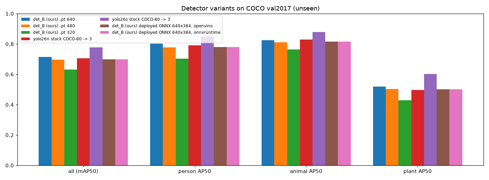</a><figcaption>AP50 per class for every detector variant.</figcaption></figure></div>
  <ul class="prose" style="display:grid;gap:6px">
    <li><b>Input size:</b> 640 → 480 px costs 0.017 mAP50; 320 px costs 0.082, mostly on small objects. The README's “smaller detector for a weak CPU” is a real trade.</li>
    <li><b>Stock models:</b> YOLO26s beats ours on COCO (0.777 against 0.715). This is its home dataset, trained on all 118k COCO images. YOLO26n, at a quarter of the size, is about level with ours (0.706). Ours was fine-tuned for jungle camera traps, which COCO cannot measure. At the app's thresholds ours finds more plants (recall 0.54 against 0.39) and is less precise.</li>
    <li><b>Deployed file:</b> the ONNX at 640×384 scores 0.699 against 0.715 for the square 640 PyTorch model. The wide input shrinks 4:3 photos; on 16:9 camera frames it loses nothing.</li>
    <li><b>Backends:</b> OpenVINO and ONNX Runtime gave identical boxes on 100.0% of images.</li>
  </ul>

  <h3>Touch classifier on every backend</h3>
  <div class="tablewrap"><table class=""><thead><tr><th>Backend</th><th>Accuracy</th><th>Speed per crop</th><th>Largest score difference vs OpenVINO</th><th>Same decision</th></tr></thead><tbody><tr><td>cuda</td><td>0.787</td><td>0.74 ms</td><td>0.0124</td><td>99.93%</td></tr><tr><td>openvino</td><td>0.788</td><td>5.01 ms</td><td>0.0000</td><td>100.00%</td></tr><tr><td>onnxruntime</td><td>0.788</td><td>5.94 ms</td><td>0.0000</td><td>100.00%</td></tr></tbody></table></div>
  <p class="prose">CUDA runs the PyTorch weights in half precision, so its scores differ from the ONNX file by up to 0.012, and it changed 2 of 3,034 decisions.</p>

  <h3>Touch classifier when the picture gets worse</h3>
  <p class="prose">The same crops, degraded the way a field camera degrades them. Across the conditions accuracy averages 0.737 with a standard deviation of 0.063.</p>
  <div class="tablewrap"><table class=""><thead><tr><th>Condition</th><th>Accuracy</th><th>F1</th><th>ROC-AUC</th><th>Decisions changed</th><th>Change</th></tr></thead><tbody><tr><td>original</td><td>0.787</td><td>0.763</td><td>0.868</td><td>0.0%</td><td>–</td></tr><tr><td>dark (dusk, gamma 1.8)</td><td>0.783</td><td>0.757</td><td>0.864</td><td>7.1%</td><td><span class="pill pass">-0.004</span></td></tr><tr><td>bright (sun, gamma 0.55)</td><td>0.782</td><td>0.756</td><td>0.869</td><td>5.9%</td><td><span class="pill pass">-0.005</span></td></tr><tr><td>motion/focus blur (7 px)</td><td>0.771</td><td>0.753</td><td>0.854</td><td>15.2%</td><td><span class="pill pass">-0.016</span></td></tr><tr><td>sensor noise (sigma 15)</td><td>0.587</td><td>0.281</td><td>0.712</td><td>34.0%</td><td><span class="pill fail">-0.200</span></td></tr><tr><td>low resolution (56 px, upscaled)</td><td>0.735</td><td>0.708</td><td>0.819</td><td>19.8%</td><td><span class="pill warn">-0.052</span></td></tr><tr><td>JPEG quality 20</td><td>0.688</td><td>0.602</td><td>0.774</td><td>23.3%</td><td><span class="pill fail">-0.099</span></td></tr><tr><td>mirrored</td><td>0.789</td><td>0.765</td><td>0.868</td><td>7.9%</td><td><span class="pill pass">+0.002</span></td></tr><tr><td>greyscale (night IR)</td><td>0.706</td><td>0.601</td><td>0.815</td><td>19.1%</td><td><span class="pill fail">-0.081</span></td></tr></tbody></table></div>

  <h3>Pose model: nano or small?</h3>
  <div class="tablewrap"><table class=""><thead><tr><th>Pose model</th><th>File size</th><th>Frames with a person</th><th>Frames with a wrist</th><th>Mean wrist confidence</th><th>Speed (GPU)</th></tr></thead><tbody><tr><td>yolo26n-pose</td><td>7.9 MB</td><td>99.8%</td><td>80.9%</td><td>0.778</td><td>12.1 ms</td></tr><tr><td>yolo26s-pose (deployed)</td><td>24.2 MB</td><td>100.0%</td><td>83.5%</td><td>0.790</td><td>11.7 ms</td></tr></tbody></table></div>
  <p class="prose">Where both models found a wrist, they put it within 2% of the frame diagonal of each other 59.5% of the time (median distance 1.69% of the diagonal, 608 wrists). The app uses the small model on a crop around each nearby person, so these full-frame numbers are a lower bound for both.</p>
  <div class="figs"><figure class="wide"><a href="ai/pose/pose_n_vs_s.jpg">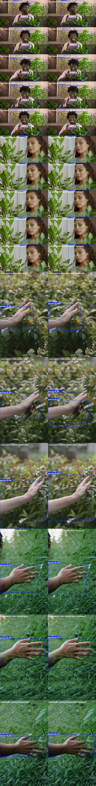</a><figcaption>The same frames through the nano (left) and small (right) pose models.</figcaption></figure></div>

  <h3>The whole pipeline on CPU and GPU</h3>
  <p class="prose">With a plant zone drawn, OpenVINO on the CPU got 8 of 8 clips right and CUDA on the GPU 8 of 8; the two raised or held back an alert the same way on 8 of 8 clips.</p>
</section>

<section id="findings">
  <h2>Findings</h2>
  <div class="tablewrap"><table class=""><thead><tr><th>Severity</th><th>Area</th><th>Finding</th><th>Status</th></tr></thead><tbody><tr><td><span class="pill fail">High</span></td><td>Security · regression</td><td><b>Sensor data and alerts did not check permissions</b><div><code>GET /api/sensors</code> and resolving an alert only checked that someone was signed in. The MQTT test showed a reviewer and an administrator reading every sensor reading, and a botanist resolving a ranger's alert. NY fixed this on 5 Nov (<code>90063624</code> on <code>feature/iot-monitoring</code>), but PR #15 merged a different copy of the IoT work and the fix was lost.</div></td><td>Fixed on demo: the routes need <code>sensor.view</code> and <code>alert.resolve</code> again, the Resolve button is hidden from roles without it, and API section 20 tests both rules.</td></tr><tr><td><span class="pill fail">High</span></td><td>Process</td><td><b><code>npm test</code> could not pass with the committed rate limits</b><div>The API suite got <code>429 Too Many Requests</code> in section 8 and stopped after 85 checks; the UI and passkey suites then failed to sign in. Same as finding 3 of the 12 Nov report.</div></td><td>Fixed on demo: <code>npm run dev:test</code> starts the server with the limits raised for the tests only (refused in production). <code>tests/security.test.mjs</code> still checks the real limits.</td></tr><tr><td><span class="pill warn">Medium</span></td><td>Bug</td><td><b>A forgotten-password request could skip telling the administrators</b><div>The once-per-15-minutes notice was remembered in memory by user id. After a reseed, a new account got an id the running server had already seen, and no notice was sent. Found when the API suite failed on its second run.</div></td><td>Fixed on demo: the limit now uses <code>users.reset_requested_at</code> from the database. The API suite passed twice in a row on one server.</td></tr><tr><td><span class="pill warn">Medium</span></td><td>Security</td><td><b>MQTT broker passwords are written in the code</b><div><code>Server/mqtt.js</code> falls back to the backend broker login, and the sketch holds the device login, so both are in git history. Same as finding 4 of the 12 Nov report.</div></td><td>Open, needs a team decision: read both from <code>.env</code> / a secrets header (the code is in <code>90063624</code>), then change the passwords in the EMQX console and hand them out to the team.</td></tr><tr><td><span class="pill warn">Medium</span></td><td>AI</td><td><b>The touch model degrades on noisy, compressed and greyscale pictures</b><div>Accuracy falls from 0.787 to 0.587 with sensor noise (recall collapses, F1 0.281), 0.688 at JPEG quality 20 and 0.706 in greyscale. A forest camera at dusk or on night IR produces all three.</div></td><td>Open: add noise, JPEG and greyscale augmentation when the touch model is next trained, and record a test clip at dusk.</td></tr><tr><td><span class="pill warn">Medium</span></td><td>AI</td><td><b>Close-up clips need a plant zone to alert</b><div>On app defaults 4 of 8 clips gave the right result; with a plant zone drawn, 8 of 8. In close-ups the detector sees a hand but no whole person or single plant, so nothing triggers.</div></td><td>For the demo: always draw the plant zone before pressing Start.</td></tr><tr><td><span class="pill info">Low</span></td><td>AI</td><td><b>Detector boxes on images with nothing labelled</b><div>On 27 of 150 COCO images with no person, animal or potted plant, the deployed detector drew a box (stock YOLO26s: 10). Looking at them, most are real trees and shrubs that COCO does not label, which our plant class is meant to find; a few are true mistakes, such as a painting of flowers.</div></td><td>No action for the forest use case. Keep watching false alerts on the real camera.</td></tr><tr><td><span class="pill info">Low</span></td><td>Test</td><td><b>One passkey check is intermittent</b><div>“…and the passkey is saved” failed once in 5 runs (on the busiest run) and passed in the other 4. <code>Passkeys.jsx:204</code> continues to the dashboard without saving when the registration options request fails, which would explain it.</div></td><td>Open: show an error there instead of continuing silently.</td></tr><tr><td><span class="pill info">Low</span></td><td>IoT</td><td><b>Connection-error lines while the broker is unreachable</b><div>With the broker down the app keeps working, and the server retries every 5 s (8 error lines in 16 s). It reconnects by itself when the network returns.</div></td><td>Optional: log the outage once and the recovery once.</td></tr><tr><td><span class="pill info">Info</span></td><td>Dependencies</td><td><b>npm audit reports 10 vulnerabilities (6 high)</b><div>In <code>body-parser</code>, <code>node-forge</code>, <code>qs</code> and <code>react-router</code>. All but react-router have a non-breaking fix.</div></td><td>Run <code>npm audit fix</code> on demo and re-run the tests.</td></tr><tr><td><span class="pill info">Info</span></td><td>Docs</td><td><b><code>.env.example</code> names the old HiveMQ broker</b><div>The code now defaults to the EMQX broker.</div></td><td>Update the comment (also in <code>90063624</code>).</td></tr><tr><td><span class="pill info">Info</span></td><td>Test</td><td><b>Wait a minute between two <code>npm test</code> runs</b><div>The administrator recovery-email check sends one code per account per minute, by design.</div></td><td>Noted in <code>docs/demo-branch.md</code>.</td></tr></tbody></table></div>
</section>

<section id="rerun">
  <h2>Run it again</h2>
  <p>On the <code>demo</code> branch, with a local MySQL in <code>.env</code> and <code>MQTT_TOPIC_PREFIX</code> set to your own prefix. Full steps are in <code>docs/demo-branch.md</code>.</p>
<pre>npm run dev:test                 # terminal 1: server with test-only limits
npm test                         # terminal 2: security, i18n, API, UI, passkeys
npm run test:iot                 # MQTT end to end

cd ai-vision-node                # with its .venv active
python scripts/test_pipeline.py
python scripts/eval_touch_full.py --out reports/touch_full
python scripts/eval_det_coco.py  --out reports/det_coco
python scripts/eval_videos.py    out/videos data/test_videos
python scripts/eval_pose_variants.py out/pose data/test_videos

python test-report/make_report.py   # rebuild this page from the results</pre>
  <p class="muted">Logs for every run, including the failing ones before each fix, are in <code>test-report/logs/</code>.</p>
</section>

</div></main>
